Introduction to Seaborn
Statistical Data Visualization Simplified: Learn How to Transform Raw Pandas DataFrames into Beautiful, Insightful Charts with Simple Python Syntax
🚀 01. What is Seaborn? (Seaborn Kya Hai?)
Jab aap data analysis karte hain, tab Excel sheets ya Pandas DataFrames mein hazaron rows aur columns dekh kar patterns samajhna lagbhag namumkin hota hai. Numbers ka ek lamba table dekh kar koi yeh nahi bata sakta ki kaunsa trend chal raha hai, kaunse outliers hain, ya data ka distribution kaisa hai.
Data Visualization ka simple matlab hota hai data ko graphical format (charts, plots, maps) mein convert karna. Visualization se humare human brain ko patterns, correlations aur anomalies turant samajh aa jate hain.
Seaborn Python ki ek high-level, open-source Statistical Data Visualization library hai jo Matplotlib ke upar build ki gayi hai aur Pandas DataFrames ke sath seamlessly integrate hoti hai. Iska primary goal hai: "Make attractive, informative statistical graphics with minimal code."
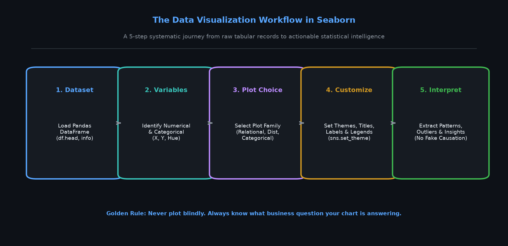
The Python Data Science Stack Relationship
Aksar beginners confuse hote hain ki NumPy, Pandas, Matplotlib aur Seaborn ke beech kya rishta hai:
- NumPy: Foundation layer jo high-performance mathematical arrays aur low-level matrix computations handle karta hai.
- Pandas: Data wrangling aur manipulation layer jo labeled DataFrames, column filtering aur aggregations provide karta hai.
- Matplotlib: Core drawing engine jo canvas, axes, coordinates aur fundamental drawing primitives handle karta hai. Powerful hai, lekin basic chart banane ke liye bhi 10-15 lines ka code likhna padta hai.
- Seaborn: High-level statistical visualization layer jo Matplotlib ke upar baithti hai. Yeh automatic aggregations, confidence intervals, beautiful color palettes aur direct DataFrame column mapping provide karti hai ek single line of code mein!
| Comparison Factor | Matplotlib (The Foundation) | Seaborn (The Statistical Specialist) |
|---|---|---|
| Level of Abstraction | Low-level: Har ek line, tick mark aur label manually configure karna padta hai. | High-level: Ek function call (e.g. sns.barplot) mein mean, error bars aur labels auto-render hote hain. |
| Pandas Integration | Limited: Column arrays manually extract karke pass karne padte hain. | Native: Directly column names pass karo: data=df, x='study_hours', y='exam_marks'. |
| Statistical Computations | None: Pehle khud mean ya histogram calculate karo, fir plot karo. | Built-in: Automatic KDE density smoothing, linear regression fits, bootstrapped confidence intervals. |
| Aesthetic Defaults | Classic, basic styling jisko professional banane ke liye custom CSS/styling likhna padta hai. | Modern, publication-ready color palettes aur clean grid themes out-of-the-box. |
E-Commerce & College Analytics: Agar aapko yeh dekhna hai ki College mein "Kya zyada study hours se sach mein marks badhte hain?" ya E-Commerce platform par "Mumbai aur Bengaluru mein Electronics vs Fashion ka average order value kaisa hai?" — toh Seaborn mein yeh sirf 1 line of code hai!
🔧 02. Installation and Imports (Setup Kaise Karein?)
Seaborn use karne se pehle use apne Python environment mein install karna hota hai. Yaad rahe ki installation command terminal (Command Prompt, PowerShell ya Bash) ya Jupyter Notebook ke terminal cell mein chalta hai, ordinary Python script ke andar nahi.
pip install seaborn matplotlib pandas numpyAgar aap Anaconda use kar rahe hain, toh aap conda command use kar sakte hain:
conda install -c conda-forge seabornStandard Industry Imports Pattern
Python data science community mein libraries ko standard short aliases ke sath import kiya jata hai:
import seaborn as sns
import matplotlib.pyplot as plt
import pandas as pd
import numpy as np
print("Seaborn Version:", sns.__version__)
print("Matplotlib Version:", plt.matplotlib.__version__)
print("Pandas Version:", pd.__version__)
print("NumPy Version:", np.__version__)Seaborn ka standard alias sns American political drama TV series The West Wing ke character Samuel Norman Seaborn ke initials par based hai! Yeh data science community ka ek fun easter egg hai jo globally standard ban chuka hai.
Complete Runnable Example: Creating & Verifying a Sample DataFrame
Aaiye ek chhota reproducible DataFrame banayein aur Seaborn ke sath test karein:
# Create a small student study DataFrame
data = {
'student': ['Aarav', 'Priya', 'Rohan', 'Sneha', 'Vikram'],
'study_hours': [2.5, 5.0, 7.5, 3.5, 8.0],
'exam_score': [55, 72, 88, 64, 94]
}
df_quick = pd.DataFrame(data)
print("DataFrame Shape:", df_quick.shape)
print("\nDataFrame Preview:")
print(df_quick)🎨 03. Your First Seaborn Graph (Pehla Seaborn Chart)
Ab hum dekhenge ki Seaborn mein graphs banana kitna natural aur concise hai. Seaborn ke functions direct DataFrame aur column names ke sath baat karte hain. Hum teen sabse basic aur common plots se shuruat karenge:
sns.scatterplot()— Do numerical variables ke beech relationship dekhne ke liye (dots ke roop mein).sns.lineplot()— Time ya ordered sequence ke sath trend dekhne ke liye.sns.barplot()— Categories ke beech summary metrics (e.g. average marks ya average sales) compare karne ke liye.
Example A — College Performance: Study Hours vs. Exam Marks (Scatter Plot)
Question: Kya weekly zyada ghante padhne wale students ke exam marks zyada aate hain?
import seaborn as sns
import matplotlib.pyplot as plt
import pandas as pd
# Load the verified college dataset
df_college = pd.read_csv("scratch/seaborn_topic1_data/college_performance.csv")
# Create scatter plot using 150 sampled students
sample = df_college.sample(150, random_state=42)
sns.scatterplot(data=sample, x="study_hours", y="exam_marks")
plt.title("Study Hours vs. Exam Marks")
plt.xlabel("Weekly Study Hours")
plt.ylabel("Exam Marks (/100)")
plt.show()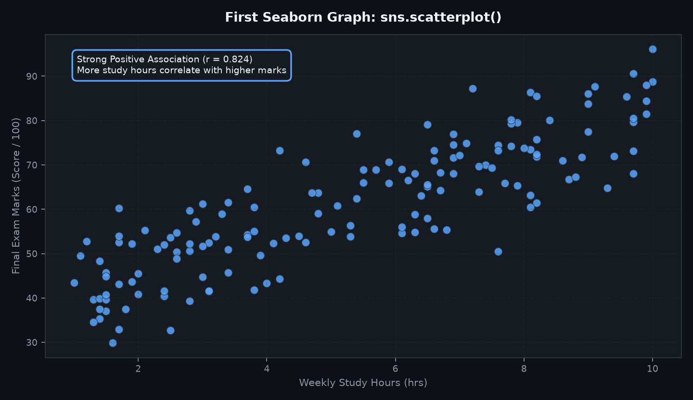
What the data shows: Chart par dots bottom-left se top-right ki taraf badh rahe hain (positive association, correlation r = 0.824). Iska matlab hai ki higher study hours generally higher exam scores se jude hue hain. Lekin dhyan rahe: correlation does not mean causation — sirf ghante baithne se marks nahi aate, study quality aur prior background bhi count karta hai!
Example B — E-Commerce: Revenue by Product Category (Bar Plot)
Question: Kaunse product category ka average order value (mean revenue) sabse zyada hai?
df_ecom = pd.read_csv("scratch/seaborn_topic1_data/ecommerce_sales.csv")
# sns.barplot automatically calculates the MEAN revenue and 95% confidence intervals!
sns.barplot(data=df_ecom, x="category", y="revenue", hue="category", legend=False)
plt.title("Average Order Revenue by Product Category")
plt.xlabel("Product Category")
plt.ylabel("Mean Revenue (INR)")
plt.show()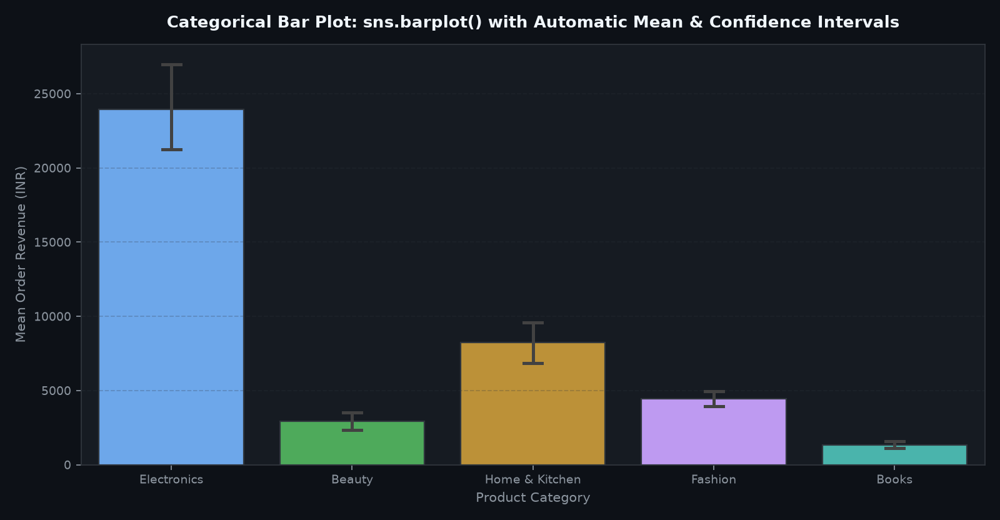
Example C — E-Commerce Timeline: Daily Sales Trend (Line Plot)
Question: Over time, daily total revenue kaise fluctuate ho raha hai?
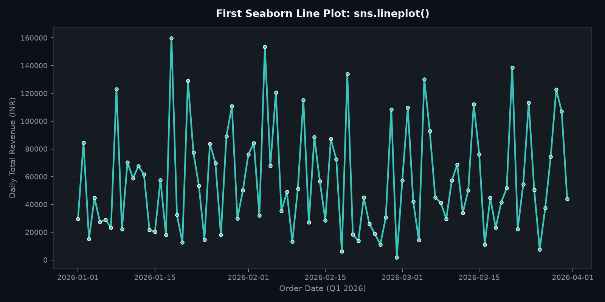
📊 04. Understanding Datasets and Plot Variables
Kisi bhi chart ko draw karne se pehle data ki structure aur variables ke types ko samajhna sabse critical step hota hai. Agar aapko yeh pata nahi hoga ki kaunsa variable continuous number hai aur kaunsa discrete category, toh aap galat chart chun baithenge.
Variable Types in Data Visualization
- Numerical Variables (Continuous / Discrete Numbers):
study_hours(5.5),exam_marks(82.0),revenue(₹15,400). In par mathematical operations (mean, median, standard deviation) possible hote hain. - Categorical Variables (Labels / Groups):
department(CS, Civil, Mech),city(Mumbai, Delhi),result(Pass, Fail). In par counting aur group-by operations kiye jaate hain. - Independent Variable (Predictor / Feature, X-axis): Woh input factor jisko hum vary karte hain ya observe karte hain (e.g. Study Hours, Dates, Product Categories).
- Dependent Variable (Outcome / Target, Y-axis): Woh result jo independent variable ke sath change hota hai (e.g. Exam Marks, Total Revenue).
Data Inspection Checklist Before Plotting
Har analysis shuru karne se pehle in 4 Pandas inspection methods ko execute karein:
# 1. Preview top 5 rows
print("=== df.head() ===")
print(df_college.head(3))
# 2. Check column data types and non-null counts
print("\n=== df.info() Summary ===")
df_college.info()
# 3. Descriptive statistics for numerical variables
print("\n=== df.describe() ===")
print(df_college[['study_hours', 'attendance_percentage', 'exam_marks']].describe().round(2))Long-Form vs. Wide-Form Data: Why Seaborn Loves 'Tidy' Data
Spreadsheet software (Excel) aksar Wide-form data use karta hai jahan ek hi cheez ke multiple columns hote hain (e.g. Math_Marks, Physics_Marks, Chem_Marks). Lekin Seaborn Long-form (Tidy Data) prefer karta hai jahan har variable ka apna column hota hai aur har observation ki apni row hoti hai.
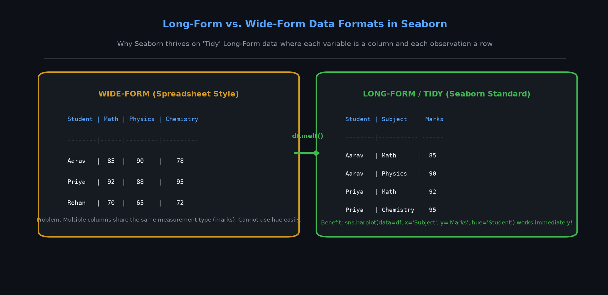
⚙️ 05. Understanding the Seaborn Plotting Syntax
Seaborn ka sabse bada strength hai iska consistent aur predictable API design. Chahe aap scatter plot banayein, bar plot banayein ya box plot banayein, core arguments ka pattern same rehta hai:
sns.plot_type(
data=df, # The Pandas DataFrame
x="column_for_x", # Column mapped to horizontal axis
y="column_for_y", # Column mapped to vertical axis
hue="category_col", # Color grouping (adds 3rd dimension!)
style="shape_col", # Marker shape grouping
size="size_col" # Point/Line size scaling
)
plt.show()| Parameter | Role & Purpose | Typical Data Type |
|---|---|---|
data= |
Data source DataFrame jahan se columns extract honge. | pd.DataFrame |
x= |
X-axis par map hone wale column ka exact string naam. | str (column header) |
y= |
Y-axis par map hone wale column ka exact string naam. | str (column header) |
hue= |
Points, bars ya lines ko categories ke hisaab se alag-alag colors assign karta hai. | Categorical str column |
style= |
Markers ke shape (circle, square, cross) ko categories par map karta hai. | Categorical str column |
size= |
Markers ki size ya lines ki thickness ko magnitude par map karta hai. | Numerical column |
plt.show() |
Matplotlib backend ko final canvas render aur display karne ka signal deta hai. | Function call |
Matplotlib mein legend show karne ke liye aapko har plot call mein label="xyz" likhna padta hai aur fir plt.legend() call karna padta hai. Seaborn mein jab bhi aap hue=, style= ya size= pass karte hain, Seaborn automatic legend generate kar deta hai aur categories ke meaningful labels render karta hai!
📊 06. Introduction to Seaborn Plot Families (Relational, Distribution, Categorical)
Seaborn ke dozens of plotting functions ko memorize karne ke bajaye unke 3 Primary Functional Families ko samajhna sabse aasan approach hai:
| Plot Family | Core Question It Answers | Axes-Level Functions | Figure-Level Function |
|---|---|---|---|
| 1. Relational | Do numerical variables ke beech kya relationship ya trend hai? | sns.scatterplot(), sns.lineplot() |
sns.relplot() |
| 2. Distribution | Ek numerical variable ke values ka spread, frequency aur concentration kaisa hai? | sns.histplot(), sns.kdeplot(), sns.ecdfplot() |
sns.displot() |
| 3. Categorical | Categories ke beech summary statistics ya spread ka comparison kaisa hai? | sns.barplot(), sns.countplot(), sns.boxplot(), sns.violinplot() |
sns.catplot() |
A. Relational Plots: Examining Variables Side-by-Side
Jab aap do continuous numerical measurements (jaise Study Hours aur Exam Marks, ya Temperature aur Electricity Consumption) ko compare karte hain, toh Relational plots use hote hain.
sns.scatterplot(): Har student ya transaction ko ek distinct point ke roop mein plot karta hai. Outliers aur clusters dekhne ke liye perfect hai.sns.lineplot(): Jab X-axis par time ya ordered sequence ho (jaise Dates, Days, Months), toh line plot trend continuity show karta hai.sns.relplot(): Figure-level wrapper hai jo multi-panel subplots (faceting across rows/columns) ko easily generate karne deta hai.
B. Distribution Plots: Understanding Data Spread & Shape
Distribution plots yeh dikhate hain ki data kahan concentrate ho raha hai aur kahan sparse hai:
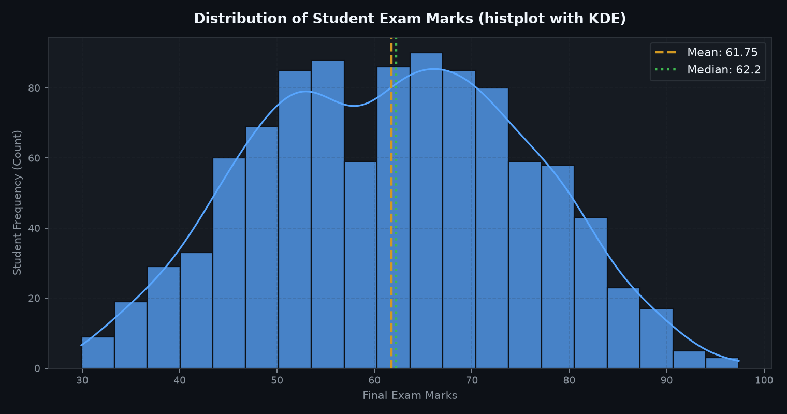
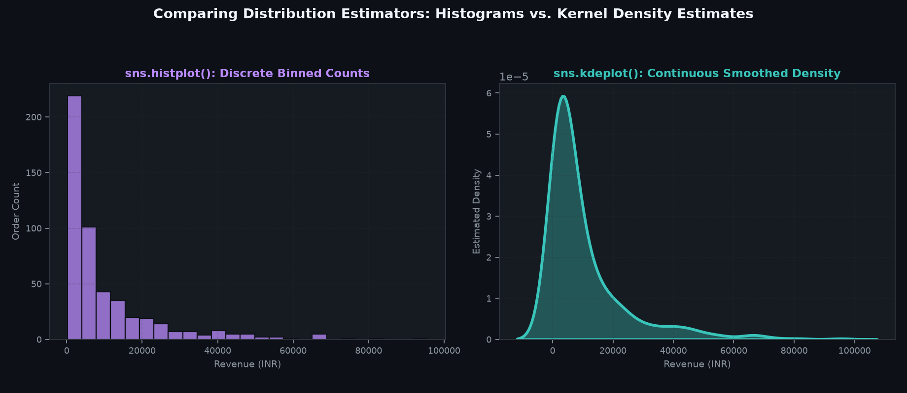
KDE ek smooth curve hota hai jo data ke underlying probability density function ko estimate karta hai. Histogram mein bin size change karne se bars ka shape badal sakta hai, lekin KDE ek consistent, continuous mathematical curve provide karta hai jo distribution ke peaks (modes) aur skewness ko clearly highlight karta hai.
C. Categorical Plots: Comparing Groups & Categories
Categorical plots category ke hisaab se numerical metric ko summarize karte hain. Beginners ka sabse bada confusion hota hai barplot() aur countplot() ke beech:
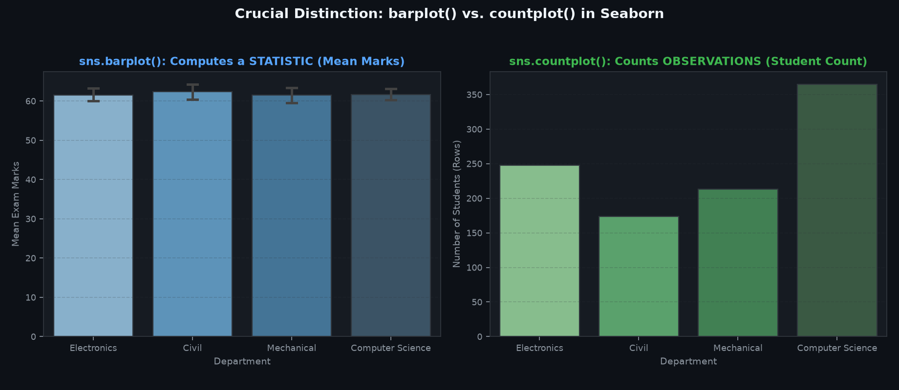
sns.barplot(data=df, x='department', y='exam_marks')— Requires both X and Y. Yeh har department ke students ke marks ka mean (average) calculate karta hai.sns.countplot(data=df, x='department')— Requires only X. Yeh sirf count karta hai ki Computer Science mein kitne students hain, Mechanical mein kitne hain, etc. (frequency count).
🎨 07. The hue Parameter — Adding Another Dimension
Standard 2D charts mein aapke paas do axes hote hain: X aur Y. Lekin real-world business problems aksar multidimensional hoti hain: "Study hours aur marks ka relationship dekhna hai, LEKIN Computer Science aur Civil students ko alag-alag color se distinguish karna hai."
Yahan hue parameter kaam aata hai. hue="column_name" pass karne se Seaborn data points ko categories ke according alag-alag colors assign karta hai aur automatic legend generate karta hai.
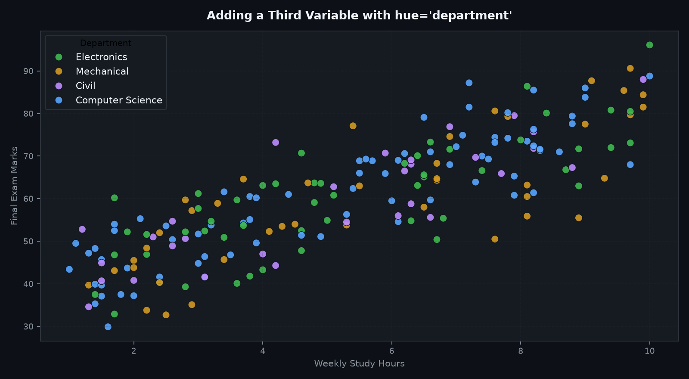
Complete Runnable Example: Comparing Plots With and Without hue
import seaborn as sns
import matplotlib.pyplot as plt
import pandas as pd
df_college = pd.read_csv("scratch/seaborn_topic1_data/college_performance.csv")
sample = df_college.sample(100, random_state=42)
# Plot WITH hue parameter
sns.scatterplot(
data=sample,
x="study_hours",
y="exam_marks",
hue="result", # Distinguish Pass vs Fail by color!
palette={"Pass": "#3fb950", "Fail": "#f85149"},
s=60
)
plt.title("Study Hours vs Marks Segmented by Pass/Fail Outcome")
plt.show()Best Practices for Using hue
- Limit Category Count (Max 4 to 6): Agar aap ek aise column par
huelagate hain jisme 30 distinct categories hain (e.g.postal_codeyastudent_name), toh chart itna colorful ho jayega ki reader ke liye distinguish karna impossible ho jayega. - Color Accessibility: Color-blind friendly palettes (jaise
palette='colorblind'ya high-contrast red/green with custom markers) use karein taaki chart har kisi ke liye readable ho. - Combine with
stylefor High Clarity: Color ke sath-sath marker shape (style='result') bhi pass karein taaki black-and-white printout mein bhi chart accurately padha ja sake.
🏛️ 08. Seaborn Themes and Styling (Themes & Aesthetics)
Matplotlib ke default charts aksar plain aur clinical lagte hain. Seaborn aapko high-level styling functions deta hai jo ek single command mein pure canvas ka font size, grid lines, background color aur axis spines transform kar dete hain:
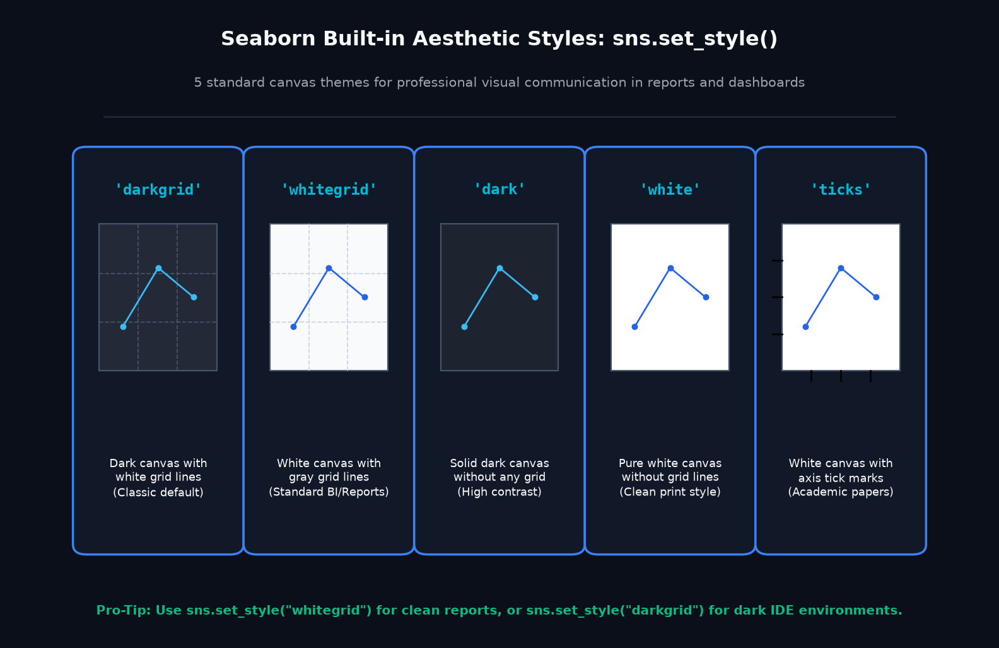
The 4 Core Styling Functions
sns.set_theme()— Master styling reset jo Seaborn ke modern defaults ko canvas par apply karta hai.sns.set_style(style)— Background aur grid layout set karta hai:
Options:'whitegrid','darkgrid','white','dark','ticks'.sns.set_context(context)— Elements ke scale aur label sizes ko target display medium ke according scale karta hai:
Options:'paper'(small/dense),'notebook'(default),'talk'(presentations),'poster'(large displays).sns.despine()— Top aur right border spines ko canvas se hata kar clean, open modern look deta hai.
# Set clean whitegrid theme with presentation scaling
sns.set_theme(style="whitegrid", context="talk")
# Create chart
fig, ax = plt.subplots(figsize=(8, 4.5))
sns.boxplot(data=df_college, x="department", y="exam_marks", ax=ax)
# Remove top and right borders
sns.despine(top=True, right=True)
plt.title("Clean Despined Departmental Marks Distribution")
plt.show()🖊️ 09. Titles, Labels, Legends, and Annotations
Ek aisa chart jisme title na ho, ya jiske axes par units na likhi hon, reader ke liye useless hota hai. Reader ko yeh guess nahi karna padna chahiye ki X-axis par "h" ka matlab "hours" hai ya "height"! Chart ko self-explanatory banana ek professional data analyst ki pehli responsibility hoti hai.
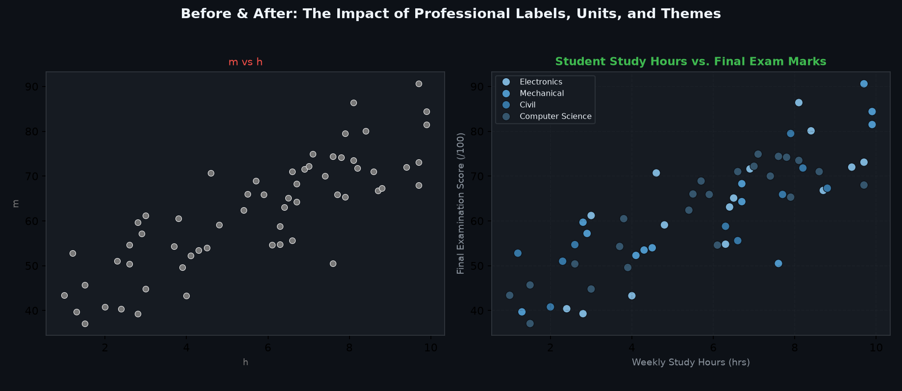
Essential Labeling & Sizing API Checklist
| Command | Functionality | Professional Example |
|---|---|---|
plt.figure(figsize=(w, h)) |
Canvas ki physical dimensions set karta hai (in inches). | plt.figure(figsize=(10, 5)) |
plt.title(title, fontsize, pad) |
Chart ka descriptive heading aur padding set karta hai. | plt.title("Study Hours vs Exam Marks", fontsize=14, pad=12) |
plt.xlabel(label) |
X-axis par clear parameter aur physical unit specify karta hai. | plt.xlabel("Weekly Study Hours (hrs)") |
plt.ylabel(label) |
Y-axis par clear parameter aur physical unit specify karta hai. | plt.ylabel("Final Exam Score (Scale 0-100)") |
plt.xticks(rotation=deg) |
Long category names ko overlap hone se bachane ke liye rotate karta hai. | plt.xticks(rotation=30, ha='right') |
plt.tight_layout() |
Padding ko auto-adjust karta hai taaki axis labels ya titles screen se cut na hon. | plt.tight_layout() |
🧩 10. Seaborn with Pandas and NumPy (Data Pipeline Integration)
Seaborn ka sabse powerful aspect yeh hai ki yeh directly Pandas DataFrames aur NumPy numerical arrays ke sath natively integrate hota hai. Real-world workflows mein aap pehle Pandas ke zariye data ko filter, clean aur aggregate karte hain, aur fir clean DataFrame ko Seaborn plotting functions ko pass kar dete hain.
When to Plot Raw Rows vs. Aggregated Data
- Plotting Raw Observations:
sns.scatterplot()aursns.histplot()ke liye hamesha un-aggregated raw DataFrame pass karein taaki har student ya order ka individual dot ya distribution visible rahe. - Plotting Aggregated Summaries: Jab aapko specific business KPIs (jaise Category-wise total sales revenue in Lakhs) plot karne hon, tab Pandas
df.groupby()use karke summary table banayein aur usesns.barplot()mein pass karein.
import pandas as pd
import seaborn as sns
import matplotlib.pyplot as plt
df_ecom = pd.read_csv("scratch/seaborn_topic1_data/ecommerce_sales.csv")
# 1. Use Pandas to aggregate total revenue per product category
category_summary = df_ecom.groupby("category")["revenue"].sum().reset_index()
category_summary["revenue_lakhs"] = (category_summary["revenue"] / 100000.0).round(2)
category_summary = category_summary.sort_values(by="revenue_lakhs", ascending=False)
print("Aggregated Category Performance Table:")
print(category_summary)
# 2. Plot the aggregated summary directly with Seaborn
sns.barplot(data=category_summary, x="category", y="revenue_lakhs", hue="category", legend=False, palette="Blues_r")
plt.title("Total E-Commerce Revenue by Category (in Lakh INR)")
plt.ylabel("Revenue (Lakhs)")
plt.show()Handling Missing Values (NaNs) Intentionally
Agar aapke dataset mein missing values hain, toh Seaborn automatically un rows ko drop kar deta hai jo current chart ke columns mein NaN contain karti hain. Lekin professional best practice yeh hai ki aap pehle df.isnull().sum() check karein aur imputation (jaise median filling) explicit code ke through karein taaki koi silent data omission na ho.
📚 11. Working with Real Built-in Datasets (tips, penguins, titanic)
Seaborn apne library package ke sath kai classic teaching datasets provide karta hai jinko bina kisi external CSV file ko download kiye direct sns.load_dataset() command se access kiya ja sakta hai.
The 3 Most Famous Built-in Seaborn Datasets
- 'tips' (244 rows): Restaurant servers dwara collect kiya gaya dataset jisme total bill, tip amount, sex, smoker status, day of week, aur party size record hai.
- 'penguins' (344 rows): Palmer Archipelago ke penguins ki anatomical measurements (bill length, flipper length, body mass, species, island).
- 'titanic' (891 rows): Titanic ship ke passengers ki demographics, ticket class, fare aur survival status.
import seaborn as sns
import matplotlib.pyplot as plt
# 1. Load the 'tips' dataset
tips = sns.load_dataset("tips")
print("Tips Dataset Dimensions:", tips.shape)
print(tips.head(3))
# 2. Plot relationship between total_bill and tip, segmented by time (Lunch vs Dinner)
sns.scatterplot(data=tips, x="total_bill", y="tip", hue="time", style="time")
plt.title("Restaurant Dining: Total Bill vs Tip Amount (Lunch vs Dinner)")
plt.xlabel("Total Bill Amount ($)")
plt.ylabel("Tip Given ($)")
plt.show()sns.load_dataset() function internally GitHub repository se CSV download karta hai. Agar aapka computer offline hai ya firewall internet access block kar rahi hai, toh yeh command fail ho sakti hai. Isiliye humne is course ke liye local reproducible CSV generators (jaise college_performance.csv aur ecommerce_sales.csv) create kiye hain jo 100% offline chalti hain!
🎓 12. Real-Life Case Study A — College Performance Explorer
Aaiye ek complete, multi-variable analytical case study build karein. Humare paas 1,000 engineering students ka synthetic academic performance dataset hai jisme study hours, attendance, assignments, exam marks aur pass/fail results darj hain.
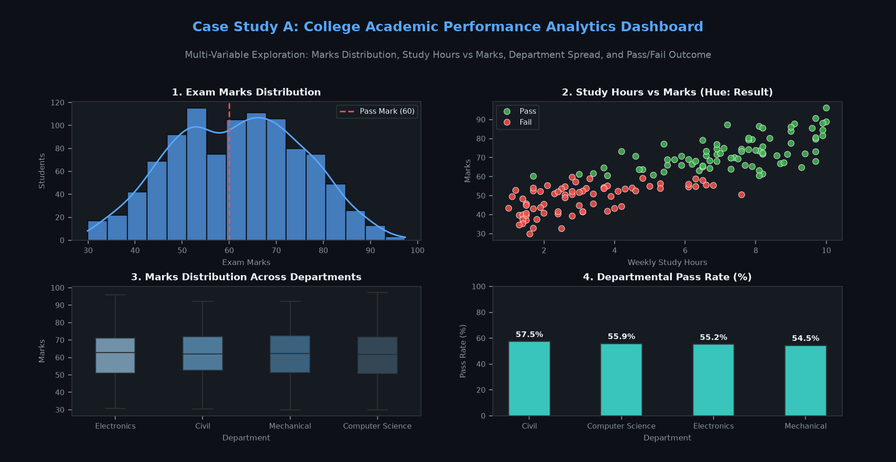
Bivariate Relationship: Study Hours vs. Exam Marks with Trendline
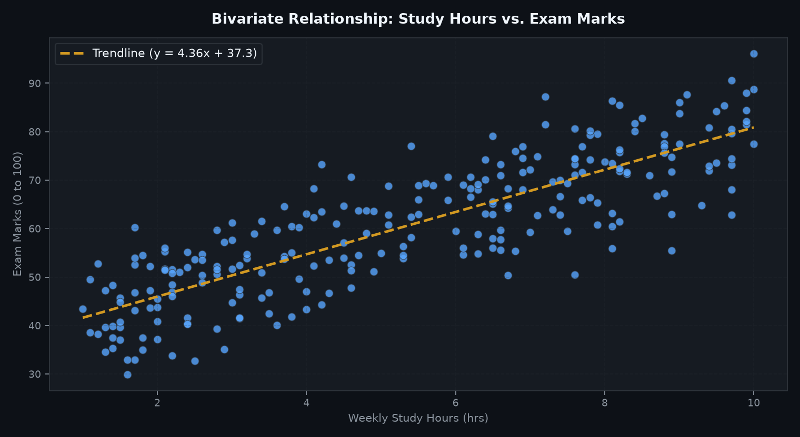
Score Distribution Across Departments
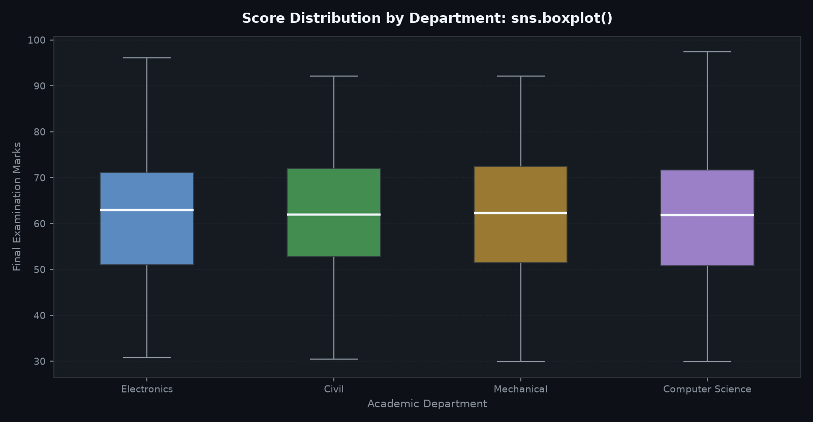
Key Insights from Case Study A
- Strong Positive Association: Study hours aur exam marks ke beech strong positive correlation (r = 0.824) hai. 8+ hours padhne wale 95% students exam pass kar rahe hain.
- Attendance Acts as a Baseline Filter: 60% se kam attendance wale students mein fail hone ka risk significantly high hai, chahe unke assignment scores acche hon.
- Department Consistency: Chaaron engineering departments (CS, EC, ME, Civil) mein median exam marks 60–64 range mein uniform hain, jisse yeh confirm hota hai ki grading standards across branches consistent hain.
- Study Limitations: Yeh dataset synthetic simulation hai. Real life mein student prior background, sleep quality aur exam anxiety jaise unmeasured factors bhi marks ko affect karte hain.
🛒 13. Real-Life Case Study B — E-Commerce Sales Explorer
Is second case study mein hum retail e-commerce platform ke 500 transaction records ko analyze karenge. Hum dekhenge ki revenue kis category mein highest hai, metro cities mein purchasing behavior kaisa hai, aur customer review ratings ka pattern kya hai.
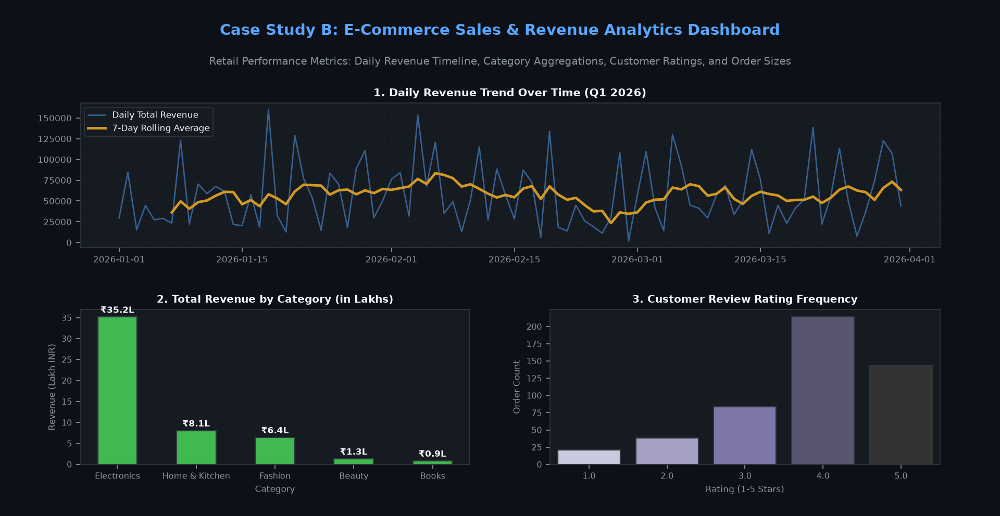
Category Revenue Segmented by City
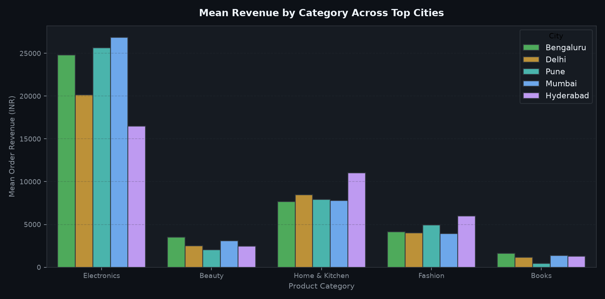
Daily Revenue Trend & Rolling Average
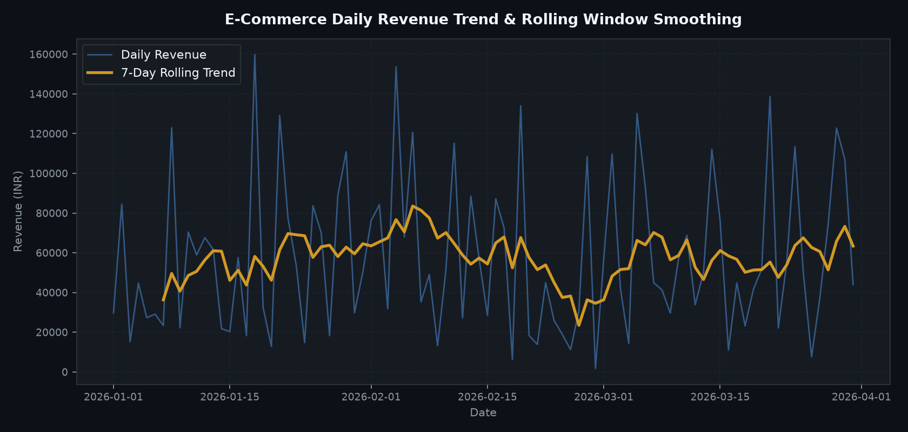
Customer Satisfaction: Review Rating Distribution
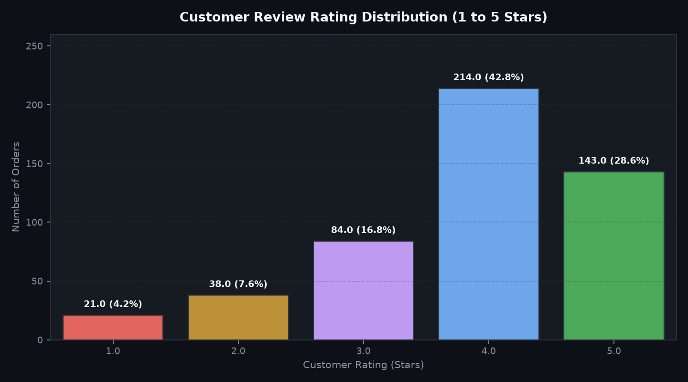
Key Business Takeaways from Case Study B
- Electronics Drives Gross Revenue: Halanki unit volume Fashion mein high hai, total platform revenue ka 67.8% (₹35.18 Lakhs out of ₹51.86 Lakhs) akele Electronics category se generate hota hai.
- Metro City Dominance: Mumbai aur Bengaluru milkar 61.2% order volume account karte hain, jo in cities mein targeted regional warehouse logistics ko justify karta hai.
- High Customer Satisfaction: Customer rating distribution heavily right-skewed hai (average rating 3.84/5), jisme sirf 5.0% orders 1-star complaint territory mein aate hain.
🧠 14. Graph Interpretation — How to Read a Chart
Data visualization ka purpose sirf sundar charts banana nahi hai; charts ko accurately interpret karna aur sahi conclusions draw karna sabse crucial skill hai. Beginners aksar chart par do variables ko badhta dekh kar turant yeh claim kar dete hain ki "X ki wajah se Y badh raha hai!" Yeh ek severe analytical error hai.
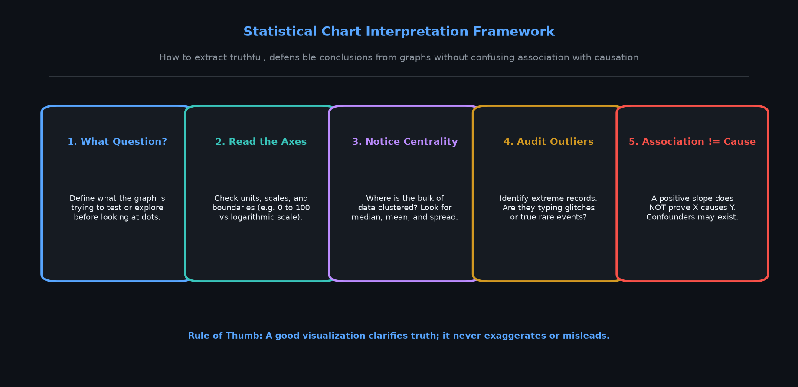
The 5-Step Chart Interpretation Framework
- Identify the Question: Chart dekhne se pehle khud se poonchein: "Yeh graph kis business problem ya hypothesis ko test karne ke liye banaya gaya hai?"
- Inspect the Axes & Scales: X-axis aur Y-axis par kya measure ho raha hai? Units kya hain (hours, percentage, INR)? Kya Y-axis zero se shuru ho raha hai ya truncated hai?
- Observe Central Tendency & Spread: Data points kahan densely cluster ho rahe hain? Spread (variance) kitna zyada hai?
- Audit Outliers: Kya koi point baki sabhi points se bahut door akela khada hai? Kya yeh real extreme case hai (e.g. topper student) ya data entry typing glitch?
- Distinguish Association from Causation: Do variables ka sath-sath badhna (positive correlation) yeh prove nahi karta ki ek dusre ka cause hai! Third confounding variables hamesha exist kar sakte hain.
⚠️ 15. Common Beginner Mistakes & How to Fix Them
Seaborn sikhne ke dauran lagbhag har beginner in common mistakes ka shikaar hota hai. Inhe pehchanein aur unke correct engineering patterns ko follow karein:
| # | Mistake Name | Why It Happens | Correct Engineering Pattern |
|---|---|---|---|
| 1 | Missing Matplotlib Import | Calling plt.title() without import matplotlib.pyplot as plt. |
Always import both: import seaborn as sns and import matplotlib.pyplot as plt. |
| 2 | Typo in Column Name | Passing x='study_hour' instead of 'study_hours' throws KeyError. |
Check df.columns before plotting to verify exact string spelling. |
| 3 | String in Numeric Plot | Passing an un-casted string column (e.g. '₹500') into a scatter or line plot. |
Clean strings and convert to float: df['col'] = df['col'].str.replace('₹','').astype(float). |
| 4 | Confusing barplot vs countplot | Passing y=... to countplot() or expecting barplot() to count rows. |
Use barplot(x, y) for average metric; use countplot(x) for observation counts. |
| 5 | Line Plot on Nominal Categories | Connecting unordered cities (Delhi, Mumbai, Pune) with a line implies artificial continuity. | Use bar plots for discrete nominal categories; reserve line plots for temporal sequences. |
| 6 | Color Palette Overload | Using hue on a column with 40 distinct IDs turns chart into a rainbow mess. |
Limit hue to columns with 2 to 6 meaningful categorical levels. |
| 7 | Missing Labels & Units | Leaving raw database abbreviations (e.g. sal_amt_tot) without units. |
Explicitly provide descriptive labels: plt.xlabel("Total Salary (INR)"). |
| 8 | Ignoring Silent NaNs | Seaborn drops rows with NaNs silently, which can distort aggregations. | Audit missing values with df.isnull().sum() before visualizing. |
| 9 | Assuming Correlation = Causation | Claiming that buying umbrellas causes rain because sales correlate. | State observations as associations or correlations, not definitive causation. |
| 10 | Assuming Built-in Datasets Work Offline | sns.load_dataset() crashes with URLError when internet is disconnected. |
Use local CSV files or wrapped try/except blocks for production code. |
| 11 | Axes-Level vs Figure-Level Confusion | Attempting to pass ax=ax into figure-level functions like sns.relplot(). |
Figure-level functions manage their own figures; use axes-level functions inside subplots. |
| 12 | Ignoring Version Warnings | Passing palette without hue triggers deprecation warnings in 0.13+. |
Pass hue='col', legend=False when applying custom palettes to categorical axes. |
| 13 | Forgetting plt.show() | In standalone Python scripts, code executes but no graphic window appears. | Always conclude plotting scripts with plt.show() or plt.savefig(). |
| 14 | Unreadable Labels on Mobile | Long horizontal category text overlapping and clipping on small viewports. | Use plt.xticks(rotation=30, ha='right') and plt.tight_layout(). |
🧭 16. Quick Reference Chart Selection Guide
Jab aapke samne ek naya dataset aata hai, toh yeh simple decision tree follow karein:
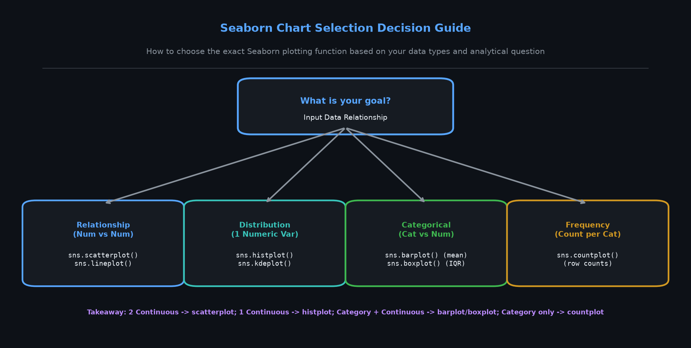
| Your Analytical Goal | Required Variables | Recommended Seaborn Function |
|---|---|---|
| Compare two continuous numerical metrics for correlation | 2 Numerical (X: Num, Y: Num) | sns.scatterplot(data, x, y) |
| Track a numerical variable across time or ordered sequence | 1 Ordered Sequence + 1 Numerical | sns.lineplot(data, x, y) |
| Inspect the spread, shape, and frequency of a single number | 1 Numerical | sns.histplot(data, x, kde=True) |
| Compare the average (mean) of a metric across categories | 1 Categorical + 1 Numerical | sns.barplot(data, x, y) |
| Count how many rows/records exist in each category | 1 Categorical | sns.countplot(data, x) |
| Examine medians, quartiles, and detect extreme outliers | 1 Categorical + 1 Numerical | sns.boxplot(data, x, y) |
🤗 17. 21 Interactive Practice Questions & Capstone Mini-Project
Test your understanding across all foundational Seaborn concepts! Each question is wrapped in an interactive expandable accordion — solve it yourself first before expanding the solution.
Part 1: Beginner Conceptual Questions (Q1 to Q5)
❓ Q1: Seaborn aur Matplotlib ke beech primary difference kya hai?▼
Answer: Matplotlib ek low-level general drawing engine hai jisme har canvas line, tick mark aur label manually configure karna padta hai. Seaborn Matplotlib ke upar build ki gayi ek high-level statistical library hai jo Pandas DataFrames ke sath directly kaam karti hai aur automatic aggregations (mean), confidence intervals aur publication-ready color themes provide karti hai.
❓ Q2: Data visualization mein 'Tidy Data' ya 'Long-Form' data kyu zaroori hai?▼
Answer: Long-form data mein har column ek distinct variable represent karta hai aur har row ek individual observation. Seaborn ke arguments (x=, y=, hue=) column names par operate karte hain. Agar data wide-form mein hoga jahan ek hi metric ke kai columns hain (e.g. Math, Physics), toh hue parameter directly kaam nahi karega.
❓ Q3: sns.barplot() aur sns.countplot() mein kya difference hai?▼
Answer: barplot() ek summary statistic (default: mean) calculate karta hai aur uske liye dono X aur Y variables chahiye hote hain. countplot() sirf rows/occurrences ko count karta hai aur uske liye sirf ek categorical variable (X) chahiye hota hai.
❓ Q4: Seaborn mein hue parameter ka kya purpose hota hai?▼
Answer: hue parameter ek categorical column ke hisaab se data points, bars ya lines ko distinct colors assign karta hai. Isse 2D chart mein ek 3rd variable (dimension) add ho jata hai aur automatic legend generate hota hai.
❓ Q5: Seaborn chart ko screen par display karne ke liye kaunsa command use hota hai?▼
Answer: plt.show() (Matplotlib se). Seaborn Matplotlib canvas par draw karta hai, aur plt.show() rendering engine ko window display karne ka signal deta hai.
Part 2: Intermediate Analytical Questions (Q6 to Q10)
❓ Q6: sns.histplot() mein kde=True add karne se kya hota hai?▼
Answer: Histogram ke binned bars ke upar ek continuous Kernel Density Estimate (KDE) curve overlay ho jata hai, jo data ke underlying probability distribution aur multi-modal peaks ko smooth format mein reveal karta hai.
❓ Q7: Box plot ke center line aur box boundary kya represent karte hain?▼
Answer: Center horizontal line Median (50th percentile) represent karti hai. Box ki lower boundary 25th percentile (Q1) aur upper boundary 75th percentile (Q3) hoti hai. Box ki total height ko Interquartile Range (IQR = Q3 − Q1) kehte hain, jisme middle 50% data reside karta hai.
❓ Q8: Seaborn mein 5 standard built-in themes kaunse hain?▼
Answer: 'whitegrid', 'darkgrid', 'white', 'dark', aur 'ticks'. Inhe sns.set_style("whitegrid") ke through configure kiya jata hai.
❓ Q9: sns.despine() function ka kya role hota hai?▼
Answer: Yeh Matplotlib canvas ke top aur right axis spines (border lines) ko remove kar deta hai, jisse chart ka aesthetic clean, open aur distraction-free ban jata hai.
❓ Q10: "Correlation does not imply causation" ka visualization context mein kya matlab hai?▼
Answer: Agar study hours aur marks ka scatter plot positive slope dikhata hai, iska matlab hai dono variables sath-sath badh rahe hain (association). Lekin yeh akele yeh prove nahi karta ki sirf ghante badhane se marks badhte hain, kyunki prior knowledge, coaching aur sleep quality jaise confounding factors bhi involved hote hain.
Part 3: Practical Coding Challenges (Q11 to Q13)
💻 Q11: Code Challenge — Plot Attendance vs Exam Marks with Department Hue▼
Task: Ek reproducible scatter plot banayein jisme attendance_percentage X-axis par ho, exam_marks Y-axis par ho, aur department color (hue) par ho.
import seaborn as sns
import matplotlib.pyplot as plt
sns.scatterplot(
data=df_college,
x="attendance_percentage",
y="exam_marks",
hue="department",
alpha=0.7
)
plt.title("Attendance Percentage vs. Exam Marks by Department")
plt.xlabel("Attendance (%)")
plt.ylabel("Final Marks (/100)")
plt.show()💻 Q12: Code Challenge — Rotate Overlapping Category Tick Labels▼
Task: E-commerce product categories ke labels agar horizontal space par overlap ho rahe hon, toh unhe 30 degrees rotate karke clean layout render karein.
sns.barplot(data=df_ecom, x="category", y="revenue", hue="category", legend=False)
plt.xticks(rotation=30, ha="right")
plt.tight_layout()
plt.show()💻 Q13: Code Challenge — Load Built-in Tips and Plot Bill vs Tip by Smoker▼
tips = sns.load_dataset("tips")
sns.scatterplot(data=tips, x="total_bill", y="tip", hue="smoker", style="smoker")
plt.title("Total Bill vs Tip Amount Segmented by Smoking Status")
plt.show()Part 4: Multiple Choice Questions (Q14 to Q18)
📝 Q14: MCQ — Which function is used to plot the frequency count of categories?▼
Options:
A) sns.barplot()
B) sns.countplot()
C) sns.histplot()
D) sns.lineplot()
Correct Answer: B) sns.countplot()
Explanation: countplot() directly counts rows/records per category. barplot() estimates a statistical metric (like mean) across groups.
📝 Q15: MCQ — Which plotting function belongs to the Relational family?▼
Options:
A) sns.boxplot()
B) sns.scatterplot()
C) sns.kdeplot()
D) sns.countplot()
Correct Answer: B) sns.scatterplot()
Explanation: Scatter plots and line plots belong to the Relational family, mapping continuous numerical relationships.
📝 Q16: MCQ — What does sns.despine() remove by default?▼
Options:
A) All 4 borders
B) Bottom and left axes
C) Top and right axes
D) Grid lines
Correct Answer: C) Top and right axes
Explanation: sns.despine() by default removes the top and right spines, leaving the traditional bottom-X and left-Y axes intact.
📝 Q17: MCQ — In Seaborn, what is the role of data= parameter?▼
Options:
A) Specifies the path to save the chart
B) Passes the source Pandas DataFrame containing columns
C) Sets the color palette
D) Configures the canvas DPI
Correct Answer: B) Passes the source Pandas DataFrame containing columns
📝 Q18: MCQ — Why should a line plot NOT be used for nominal categories like city names?▼
Options:
A) Seaborn crashes with TypeError
B) Connecting unordered categories implies false continuity and intermediate values
C) Line plot only accepts 1 data point
D) Matplotlib does not support strings
Correct Answer: B) Connecting unordered categories implies false continuity and intermediate values
Part 5: Debugging Exercises (Q19 to Q20)
🐞 Q19: Debugging — KeyError when passing column names▼
Buggy Code:
# Student wants to plot study hours vs marks
sns.scatterplot(data=df_college, x="Study_Hours", y="Exam_Marks")
# Output: KeyError: 'Study_Hours'Why it happens: Python string comparison is strictly case-sensitive. The DataFrame column headers are in lowercase snake_case (study_hours, exam_marks).
Corrected Code:
sns.scatterplot(data=df_college, x="study_hours", y="exam_marks")
plt.show()🐞 Q20: Debugging — countplot() throws ValueError: Cannot pass both x and y▼
Buggy Code:
sns.countplot(data=df_college, x="department", y="exam_marks")
# Output: ValueError: Cannot pass both `x` and `y` to `countplot`!Why it happens: countplot() is designed solely to count rows per category, so the other axis is automatically the frequency count. If you have both a category and a numerical metric, you intended to use barplot() or boxplot()!
Corrected Code:
sns.barplot(data=df_college, x="department", y="exam_marks", hue="department", legend=False)
plt.show()🚀 Question 21: Capstone Mini-Project — "Seaborn Visual Analytics Lab: College & E-commerce Insights" ▼
Project Specification: Build a standalone Python script that:
1. Loads both college_performance.csv and ecommerce_sales.csv.
2. Sets the 'whitegrid' aesthetic theme with despine().
3. Generates 3 professional statistical visualizations:
• Chart 1: College Study Hours vs Exam Marks with hue='result'.
• Chart 2: Departmental Exam Marks Boxplot.
• Chart 3: E-Commerce Category Revenue Barplot in Lakhs.
4. Includes descriptive titles, units on axes, and formatted tick labels.
5. Answers 3 analytical questions based on the generated plots.
import seaborn as sns
import matplotlib.pyplot as plt
import pandas as pd
# 1. Load Datasets
df_c = pd.read_csv("scratch/seaborn_topic1_data/college_performance.csv")
df_e = pd.read_csv("scratch/seaborn_topic1_data/ecommerce_sales.csv")
# 2. Configure Global Theme
sns.set_theme(style="whitegrid")
# 3. Create Multi-Panel Figure
fig, (ax1, ax2, ax3) = plt.subplots(1, 3, figsize=(16, 5))
# Chart 1: Scatter Study Hours vs Marks
sns.scatterplot(data=df_c.sample(120, random_state=42), x="study_hours", y="exam_marks",
hue="result", palette={"Pass": "#3fb950", "Fail": "#f85149"}, ax=ax1)
ax1.set_title("1. Study Hours vs Exam Marks")
ax1.set_xlabel("Study Hours (hrs)")
ax1.set_ylabel("Exam Marks (/100)")
# Chart 2: Department Boxplot
sns.boxplot(data=df_c, x="department", y="exam_marks", hue="department", legend=False, palette="Blues_d", ax=ax2)
ax2.set_title("2. Marks Spread by Department")
ax2.set_xlabel("Department")
ax2.set_ylabel("Exam Marks (/100)")
ax2.tick_params(axis='x', rotation=20)
# Chart 3: Category Revenue Barplot
cat_sum = df_e.groupby("category")["revenue"].sum().reset_index()
cat_sum["rev_lakhs"] = cat_sum["revenue"] / 100000.0
sns.barplot(data=cat_sum, x="category", y="rev_lakhs", hue="category", legend=False, palette="Greens_d", ax=ax3)
ax3.set_title("3. Category Revenue (in Lakhs)")
ax3.set_xlabel("Product Category")
ax3.set_ylabel("Revenue (Lakh INR)")
ax3.tick_params(axis='x', rotation=25)
sns.despine()
plt.tight_layout()
plt.show()
print("Mini-Project executed successfully!")- Study Hours Threshold: Chart 1 reveals that students with >6 study hours per week have an overwhelming pass probability (>90%).
- Department Fairness: Chart 2 confirms consistent medians across CS, EC, ME, and Civil (median ~62 marks).
- Revenue Concentration: Chart 3 proves Electronics is the undisputed top revenue generator (₹35.18 Lakhs).
🏁 18. Topic Summary, Key Takeaways & What's Next in Topic 2
Aapne Seaborn course ka pehla aur sabse important foundational milestone successfully complete kar liya hai! Yahan is topic ke core takeaways ka quick recap hai:
| Core Concept | Summary Takeaway |
|---|---|
| Seaborn's Architecture | Matplotlib ke upar high-level abstraction layer; Pandas DataFrames ke sath directly integrate hoti hai. |
| The 3 Plot Families | Relational (scatter, line), Distribution (histplot, kdeplot), aur Categorical (barplot, countplot, boxplot). |
| The hue Dimension | Categories ko distinct colors dekar 2D chart mein ek 3rd variable add karta hai with automatic legend. |
| barplot vs countplot | barplot(x, y) computes summary metric (mean); countplot(x) counts frequency of occurrences. |
| Professional Polish | Hamesha plt.title(), units on axes (plt.xlabel, plt.ylabel), themes (set_theme), aur plt.tight_layout() use karein. |
🚀 Up Next: Seaborn Topic 2 — Seaborn Setup & Figure Structure
Agli class mein hum explore karenge ki Seaborn internally Matplotlib ke Figure aur Axes objects ko kaise manipulate karta hai, Figure-level vs Axes-level functions (relplot vs scatterplot) mein deep architectural difference kya hai, aur multi-grid subplots kaise generate kiye jaate hain!